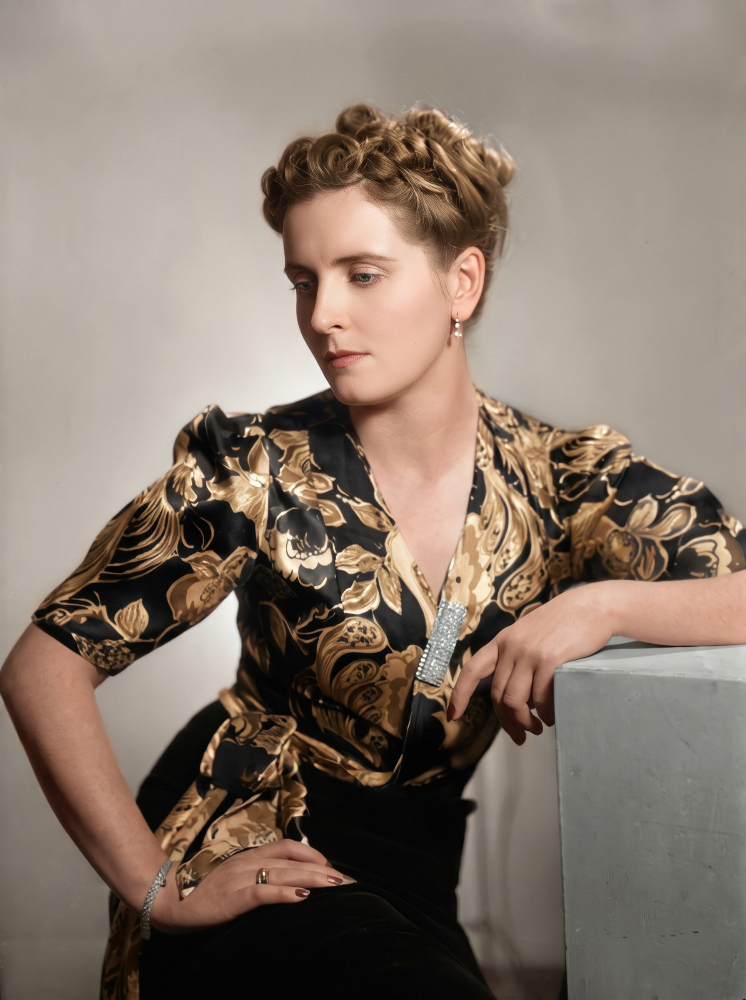

Universidad Adolfo Ibáñez · Bibliotecas UAI
Fondo histórico
Rosa Markmann
Un recorrido por las cartas que miles de chilenas y chilenos le escribieron en 1952

Retrato de estudio de Rosa Markmann · fotografía colorizada digitalmente
Biografía
Rosa Markmann — «Madre del Mundo»
Rosa Markmann Reijer, conocida como «Miti», fue Primera Dama de Chile entre 1946 y 1952 como esposa del presidente Gabriel González Videla. Fue la primera en ocupar un despacho propio en el Palacio de La Moneda.
Desde ahí impulsó el derecho a voto de las mujeres, la creación de viviendas de emergencia y campañas de salud pública que marcaron su época.
«Más que a mí, va dirigido a honrar la virtud de la mujer chilena.»
Al recibir el título de «Madre del Mundo» — Nueva York, 1952¿Por qué recibía tantas cartas?
Creó la Oficina de la Mujer: un equipo de abogadas, asistentes sociales y matronas dedicado a leer y gestionar las peticiones que llegaban de todo Chile.
En un país con alto desempleo, escasez de vivienda y tuberculosis extendida, miles de personas le escribían pidiendo trabajo, casa o medicamentos, o pidiéndole interceder ante el presidente. Ella o su equipo respondían, derivaban la solicitud a un ministerio o gestionaban ayuda directa.
Hitos
Una vida, un archivo
El fondo
Voces femeninas de 1952
El fondo fue donado a la Biblioteca de la Universidad Adolfo Ibáñez por la profesora Magdalena Pereira. Reúne la correspondencia dirigida a la Primera Dama durante 1952: cartas, notas y telegramas enviados en su mayoría por mujeres de distintas regiones del país.
Es un testimonio de las necesidades sociales del Chile de mediados del siglo XX y una fuente primaria para la historia, la sociología, los estudios de género, la educación y el trabajo social.
- Conservación
- Digitalización
- Transcripción
- Lectura en audio
- Traducción al inglés
- Georreferenciación
Galería
Memoria en papel
Documentos de la exposición «Memoria en papel: el legado de Rosa Markmann y las voces femeninas de 1952», presentada en la Biblioteca de Viña del Mar en marzo de 2026 y en la Biblioteca de Pregrado de Peñalolén en agosto de 2026.
Archivo de cartas
Lee las cartas en su lugar de origen
Recorre el mapa de Chile, elige una región y abre cada carta: la imagen original, sus datos, la transcripción y su traducción al inglés.
Entrar al archivo